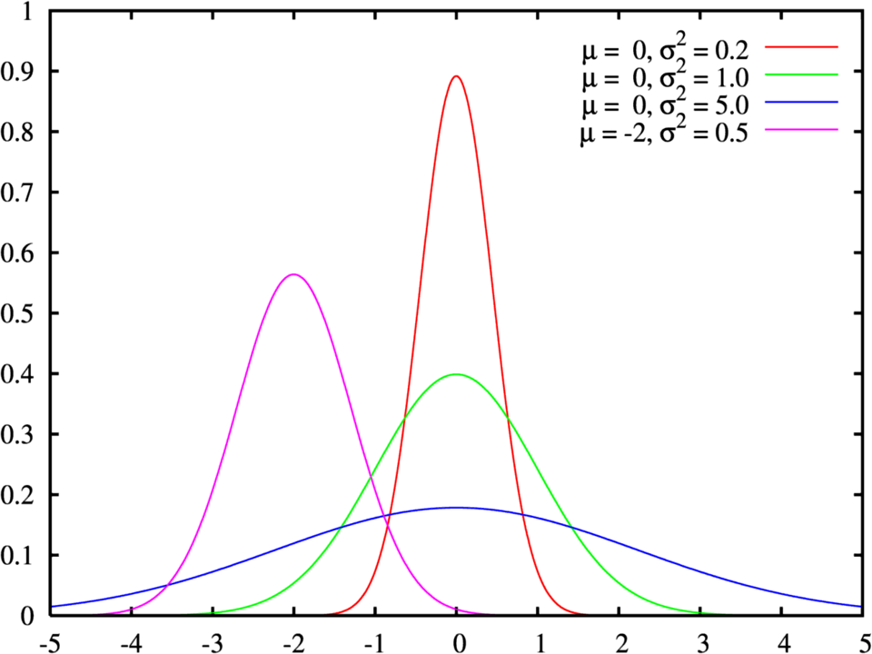
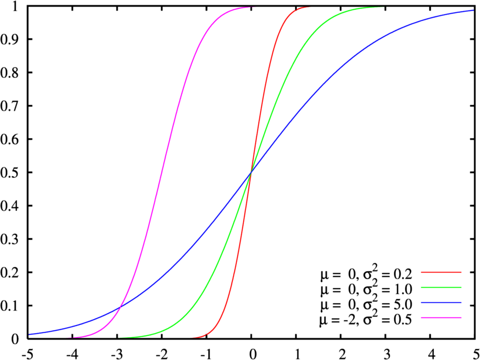

Distribución normal
Función de densidad de probabilidad

Función de distribución de probabilidad

Para calcular la probabilidad de una distribución normal en Python, se utiliza principalmente la librería SciPy (a
través
de scipy.stats.norm), la cual permite trabajar con la función de distribución acumulada (cdf), la función de
densidad de
probabilidad (pdf) y la función cuantil (ppf)
Métodos principales en scipy.stats.norm
norm.cdf(x, loc=mu, scale=sigma)(Función de distribución acumulada): Calcula \(P(X \le x)\), es decir, la
probabilidad acumulada desde menos infinito hasta el valor \(x\).
norm.pdf(x, loc=mu, scale=sigma)(Función de densidad de probabilidad): Calcula el valor de la función de densidad
en el punto \(x\).
norm.ppf(q, loc=mu, scale=sigma)(Función cuantil o inversa): Dado un nivel de probabilidad \(q\) (por
ejemplo, (0.95)), devuelve el valor \(x\) tal que \(P(X \le x) = q\)
Ejemplos prácticos en Python
Calcular \(P(X \le x)\) (Probabilidad acumulada inferior)
Si tienes una variable con media \(\mu = 100\) y desviación estándar \(\sigma = 15\), y quieres saber cuál es la probabilidad de obtener un valor menor o igual a \(115\):
from scipy.stats import norm
mu = 100
sigma = 15
x = 115
probabilidad = norm.cdf(x, loc=mu, scale=sigma)
print(f"P(X <= {x}) = {probabilidad:.4f}")
# Salida aproximada: P(X <= 115) = 0.8413 (84.13%)
Calcular \(P(X > x)\) (Probabilidad superior)
Para calcular la probabilidad de obtener un valor mayor a \(x\), se resta la función acumulada de \(1\):
probabilidad_mayor = 1 - norm.cdf(x, loc=mu, scale=sigma)
print(f"P(X > {x}) = {probabilidad_mayor:.4f}")
Calcular \(P(a \le X \le b)\) (Probabilidad en un intervalo)
Para calcular la probabilidad entre dos valores \(a\) y \(b\), restas la acumulada del valor mayor menos la del valor menor:
a, b = 90, 110
prob_intervalo = norm.cdf(b, loc=mu, scale=sigma) - norm.cdf(a, loc=mu, scale=sigma)
print(f"P({a} <= X <= {b}) = {prob_intervalo:.4f}")